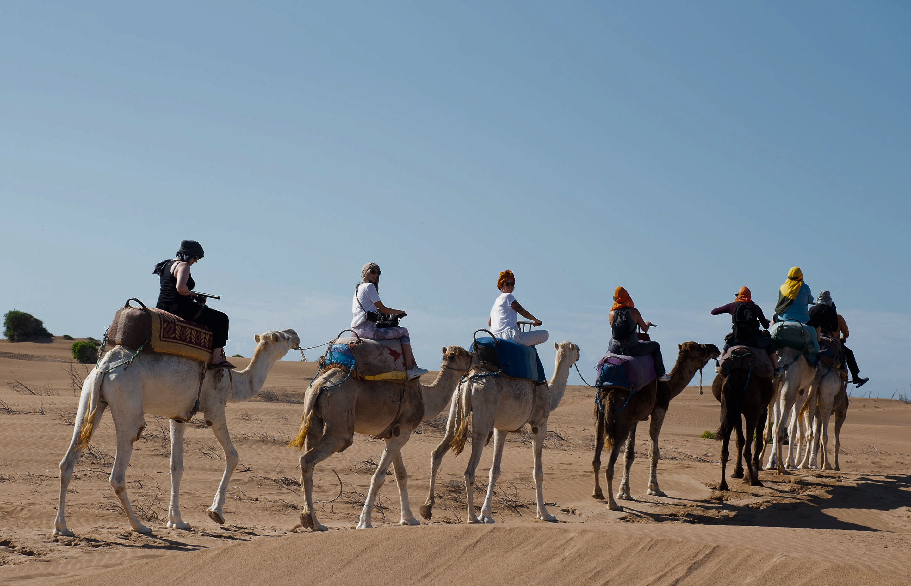
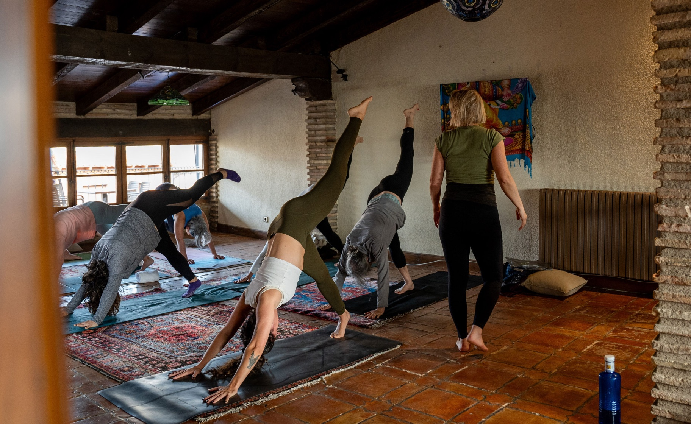
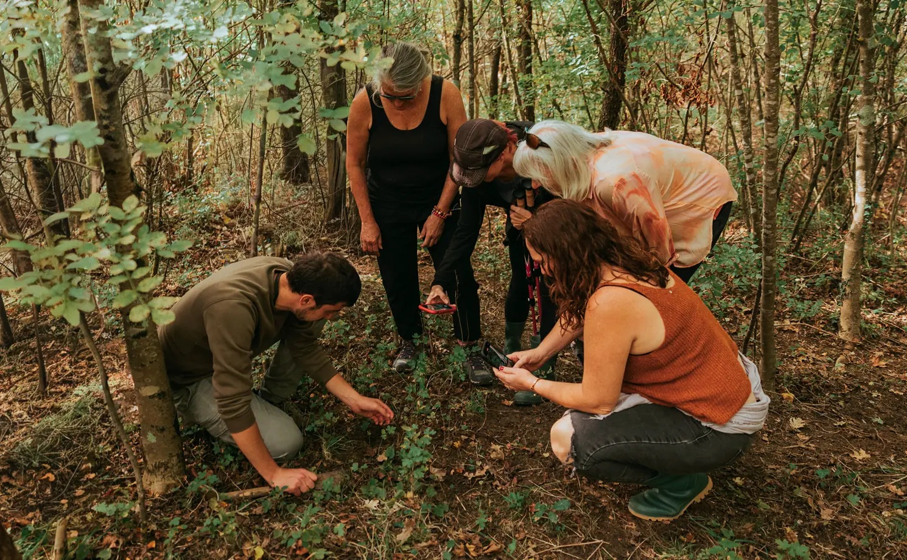
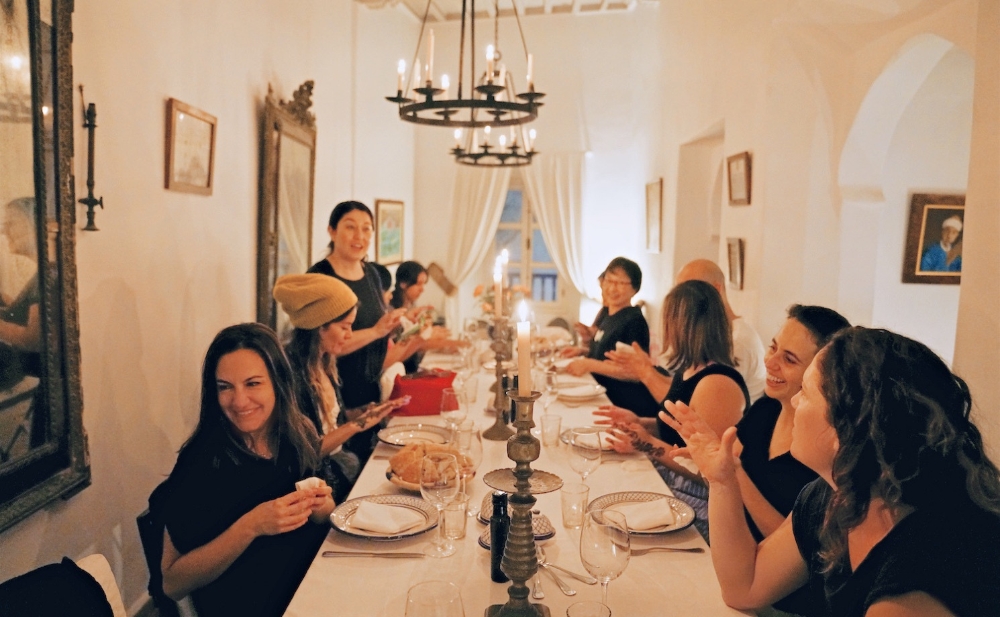

Travel that moves you
Hand-picked teachers, local experiences most travelers never get to, and a small group that becomes friends. Every detail handled.
Deep Dives
Grounded, intimate retreats in beautiful places, at our most accessible price point.
Signature Collection
Our most exclusive journeys: rare destinations, exceptional venues, every detail considered.
In our guests' words
“the value of this trip far exceeded the cost.”
Lisa Hazen
El Cuyo Retreat
“Our instructor… was exceptional as always in reading the room”
Mimi Stansbury
Thailand Retreat
“I never had to think about the logistics…”
Navigate44707
Portugal Retreat

Handpicked instructors
Practice with a teacher you'll want to follow anywhere
Classes every day, for all levels. Our teachers adapt each session to the group, so a first-timer and a teacher of 20 years both get what they came for.
Explore upcoming retreatsThe experience
See what most visitors never get to
Lunch with shepherds in the mountains of Sardinia. A private tour of the Guggenheim in Bilbao. A blessing from monks in Chiang Mai. We plan the days around the people and places we've come to know over years of going back.
Explore upcoming retreats

The shift
Sit down to the best food in town
Local chefs, long dinners, a cooking class on a farm. Our guests write about the meals more than anything else.
Explore upcoming retreatsThe way we move
Movement with presence, care and attention becomes the way we travel.
Our teachers hold space for practice that is restorative and expansive, honoring the rhythm of each body and each day.
You book. We handle every detail.
1. Choose your retreat.
Pick a destination and a room. Questions first? Write to us and a real person answers.
2. Reserve with a deposit.
Secure your spot online with a deposit. We'll confirm the exact amount and due date with you.
3. Get ready with us.
Before you go, we send everything you need to know: what to pack, how to get there, what each day holds.
4. Arrive and be present.
A member of our team travels with every group, so all you have to do is show up.
Who comes on our retreats
Lead a retreat with us
Bring your students somewhere new. We plan the itinerary, book the hotels, run the logistics and help fill your spots, so you can focus on teaching.
Good to know
No. Classes are designed for all levels, and teachers adjust each session to the group.
Yes. Many of our guests travel solo, and plenty leave with friends for the next one.
Accommodation, daily yoga, most meals, curated excursions and a team member with the group all week. Each retreat page lists exactly what's covered. Flights aren't included unless the retreat page says so.
Small. [NEED: rango real, ej. "Between 8 and 14 guests"]
[NEED: política de cancelación en una línea + link a Terms]
Your next week away starts here
Pick a place you've always wanted to know. We'll take care of the rest.